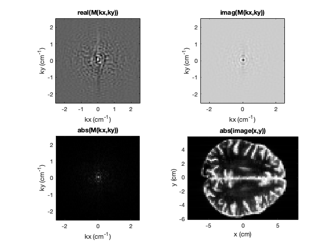

Contents
% BME/EECS516 % MRI Project Template clc clear all % Other m-files required: ift2, ift, ft2, ft, blochsim_516 % Subfunctions: none % MAT-files required: object18.mat %Programme: YUZHOU CHEN %DATA:November 23, 2023 %Oct 2022; %Last revision: Oct-30-2022
Select whether to load complex 2D object or create simple point object
complexobj = 0; if complexobj % 2D Object for reconstruction load object23; else % Single point object at (x,y,z) = (2,2,0) cm; % Point object has T1 of 1000 ms, T2 of 100 ms obj_x = 4; obj_y = 4; obj_z = 0; obj_T1 = 1000; obj_T2 = 100; end FOVx = 16; FOVy = 12; Nx = 80; Ny = 60; T_read = 8; T_y = 2; obj_n = length(obj_x); % Determine number of objects
Define simulation constants
Physical constants
gambar = 42570; % Gamma/2pi in kHz/T gam = gambar*2*pi; % Gamma in kiloradians/T % Simulation values dt = 0.05; % Time step for simulation, ms (50 us step size) te = 10.0; % Echo time, ms endtime = 16; % Total runtime of simulation, ms time = [0:dt:endtime]'; % Vector containing each time step, ms (size #timepoints x 1) totalTimepoints = length(time); % Number of time points for simulation % Initialize B vectors, the effective (x,y,z) applied magnetic field % Vectors define applied magnetic field at time tp_n for object obj_n bx = zeros([totalTimepoints obj_n]); by = zeros([totalTimepoints obj_n]); bz = zeros([totalTimepoints obj_n]); % Define a 90 RF pulse rf90pw = 3; % Pulse width in ms sincper = rf90pw/4; % in ms (this is the sinc stretch parameter) % e.g. sinc(time/sincper) as shown below rf_timepoints = rf90pw/dt; % Number of simulation steps for RF rf_time = [-(rf_timepoints-1) / 2 : (rf_timepoints-1) / 2]'.*dt; % Time vector for creating sinc, centered at 0 rf_shape = hanning(rf_timepoints) .* sinc(rf_time./sincper); % Sinc waveform shape with hanning window, with amplitude 1 rf_amplitude90 = (pi / 2)/(gam * dt * sum(rf_shape)); % REPLACE 0 with amplitude of the RF pulse here, in T % Scale rf_shape by a_rf90 (amplitude), then fill the remainder of the time with zeros b1_90 = rf_amplitude90.*[rf_shape; zeros([totalTimepoints-rf_timepoints 1])]; m0 = [0; 0; 1]; gz = 0; omega_shift = gam * gz * 0;
part 1
bx = b1_90; [mx,my,mz] = blochsim_516(m0,bx,by,bz,obj_T1,obj_T2,dt); figure (1) subplot(3,1,1) plot(time,mx);xlabel('time (ms)');ylabel('Mx');axis([0 endtime -1 1]);title('part1'); subplot(3,1,2) plot(time,my);xlabel('time (ms)');ylabel('My');axis([0 endtime -1 1]); subplot(3,1,3) plot(time,mz);xlabel('time (ms)');ylabel('Mz');axis([0 endtime -1 1]);

part 2
obj_T1_1 = 20; obj_T2_2 = 10; [mx_2,my_2,mz_2] = blochsim_516(m0,bx,by,bz,obj_T1_1,obj_T2_2,dt); figure (2) subplot(3,2,1) plot(time,mx);xlabel('time (ms)');ylabel('Mx');axis([0 endtime -1 1]);title('part 1: (T1, T2) = (1000, 100)'); subplot(3,2,3) plot(time,my);xlabel('time (ms)');ylabel('My');axis([0 endtime -1 1]); subplot(3,2,5) plot(time,mz);xlabel('time (ms)');ylabel('Mz');axis([0 endtime -1 1]); subplot(3,2,2) plot(time,mx_2);xlabel('time (ms)');ylabel('Mx');axis([0 endtime -1 1]);title('part 2: (T1, T2) = (20, 10)'); subplot(3,2,4) plot(time,my_2);xlabel('time (ms)');ylabel('My');axis([0 endtime -1 1]); subplot(3,2,6) plot(time,mz_2);xlabel('time (ms)');ylabel('Mz');axis([0 endtime -1 1]);
part 3
Create gradients Create gz
rf90bw = 1 / sincper; %bandwith of RF slThick = 1; % Slick thickness in cm gz1_a = 2*pi*rf90bw/gam/slThick; % REPLACE 0 with amplitude of gz1 in T/cm gz1_pw = rf90pw; % Match the width of gz1 to the RF pulse gz2_a = -gz1_a; % REPLACE 0 with amplitude of gz2 in T/cm gz2_pw = rf90pw/2; % Create gz with positve area gz1_a*gz1_pw, followed by negative area gz2_a*gz2pw % gz step size is dt, with amplitude values in T/cm gz = (time < gz1_pw) .* gz1_a ... + (time >= gz1_pw).*(time < (gz1_pw+gz2_pw)) .* gz2_a; bz_3 = gz * obj_z; [mx_3,my_3,mz_3] = blochsim_516(m0,bx,by,bz_3,obj_T1,obj_T2,dt); figure (3) subplot(3,2,1) plot(time,mx);xlabel('time (ms)');ylabel('Mx');axis([0 endtime -1 1]);title('part 1: without Gz'); subplot(3,2,3) plot(time,my);xlabel('time (ms)');ylabel('My');axis([0 endtime -1 1]); subplot(3,2,5) plot(time,mz);xlabel('time (ms)');ylabel('Mz');axis([0 endtime -1 1]); subplot(3,2,2) plot(time,mx_3);xlabel('time (ms)');ylabel('Mx');axis([0 endtime -1 1]);title('part 3: with Gz'); subplot(3,2,4) plot(time,my_3);xlabel('time (ms)');ylabel('My');axis([0 endtime -1 1]); subplot(3,2,6) plot(time,mz_3);xlabel('time (ms)');ylabel('Mz');axis([0 endtime -1 1]);
part 4
obj_z_41 = 0.2; obj_z_42 = 1; bz_41 = gz * obj_z_41; bz_42 = gz * obj_z_42; [mx_41,my_41,mz_41] = blochsim_516(m0,bx,by,bz_41,obj_T1,obj_T2,dt); [mx_42,my_42,mz_42] = blochsim_516(m0,bx,by,bz_42,obj_T1,obj_T2,dt); figure (4) subplot(3,3,1) plot(time,mx_3);xlabel('time (ms)');ylabel('Mx');axis([0 endtime -1 1]);title('part 3: z = 0');subtitle('with Gz'); subplot(3,3,4) plot(time,my_3);xlabel('time (ms)');ylabel('My');axis([0 endtime -1 1]); subplot(3,3,7) plot(time,mz_3);xlabel('time (ms)');ylabel('Mz');axis([0 endtime -1 1]); subplot(3,3,2) plot(time,mx_41);xlabel('time (ms)');ylabel('Mx');axis([0 endtime -1 1]);title('part 4: z = 0.2');subtitle('with Gz'); subplot(3,3,5) plot(time,my_41);xlabel('time (ms)');ylabel('My');axis([0 endtime -1 1]); subplot(3,3,8) plot(time,mz_41);xlabel('time (ms)');ylabel('Mz');axis([0 endtime -1 1]); subplot(3,3,3) plot(time,mx_42);xlabel('time (ms)');ylabel('Mx');axis([0 endtime -1 1]);title('part 4: z = 1');subtitle('with Gz'); subplot(3,3,6) plot(time,my_42);xlabel('time (ms)');ylabel('My');axis([0 endtime -1 1]); subplot(3,3,9) plot(time,mz_42);xlabel('time (ms)');ylabel('Mz');axis([0 endtime -1 1]);
part 5
Create gx
k_x = 1/FOVx; gx_5b = Nx* k_x / T_read / gambar; gx_5a = -2 * gx_5b; t_gx_1 = 5.5; t_gx_2 = 7.5; t_gx_3 = 15.5; gx_5 = (time >= t_gx_1).*(time < t_gx_2) .* gx_5a ... + (time >= t_gx_2).*(time < t_gx_3) .* gx_5b; bx_5 = b1_90; by_5 = zeros([totalTimepoints obj_n]); bz_5 = gx_5 * obj_x; [mx_5,my_5,mz_5] = blochsim_516(m0,bx_5,by_5,bz_5,obj_T1,obj_T2,dt); figure (5) subplot(3,2,1) plot(time,mx_3);xlabel('time (ms)');ylabel('Mx');axis([0 endtime -1 1]);title('part 3: without Gx'); subplot(3,2,3) plot(time,my_3);xlabel('time (ms)');ylabel('My');axis([0 endtime -1 1]); subplot(3,2,5) plot(time,mz_3);xlabel('time (ms)');ylabel('Mz');axis([0 endtime -1 1]); subplot(3,2,2) plot(time,mx_5);xlabel('time (ms)');ylabel('Mx');axis([0 endtime -1 1]);title('part 5: with Gx'); subplot(3,2,4) plot(time,my_5);xlabel('time (ms)');ylabel('My');axis([0 endtime -1 1]); subplot(3,2,6) plot(time,mz_5);xlabel('time (ms)');ylabel('Mz');axis([0 endtime -1 1]);
part 6
nread = 80; npe = 60; by_6 = zeros([totalTimepoints obj_n]); sig_6 = zeros([nread 1]); gy_6 = zeros([totalTimepoints 1]); bz_6 = gx_5 * obj_x; [mx_6,my_6,mz_6] = blochsim_516(m0,bx_5,by_6,bz_6,obj_T1,obj_T2,dt); M_6 = mx_6 + 1i * my_6; index_1 = 1; for index = 1 : totalTimepoints if (index >= 151 && index <= 310) && mod(index,2) == 1 sig_6(index_1,1) = M_6(index,1); index_1 = index_1 + 1; end end xpos = [-nread/2:nread/2-1]/nread.*FOVx; ypos = [-npe/2:npe/2-1]/npe*FOVy; figure(6) plot(xpos,abs(ift(sig_6)));xlabel('x (cm)');ylabel('received signal');axis([-8 8 -1 1]);title('magnitude vs spatial position');
part 7
Create gy
k_y = 1/FOVy; gy_max = Ny * k_y / gambar / T_y / 2; delta_gy = 2 * pi / (gam * 2 *FOVy); by_7 = zeros([totalTimepoints obj_n]); sig_7 = zeros([nread npe]); M_7 = zeros([totalTimepoints npe]); for pe = 1:npe gy_7 = (time >= t_gx_1).*(time < t_gx_2) .* (delta_gy * (pe - 1) - gy_max); bz_7 = gx_5 * obj_x + gy_7 * obj_y + gz * obj_z; [mx_7,my_7,mz_7] = blochsim_516(m0,bx_5,by_7,bz_7,obj_T1,obj_T2,dt); M_7(:,pe)= mx_7 + 1i * my_7; index_1 = 1; for index = 1 : totalTimepoints if (index >= 151 && index <= 310) && mod(index,2) == 1 sig_7(index_1,pe) = M_7(index,pe); index_1 = index_1 + 1; end end end % show images for parts 7-10 W_kx = k_x * Nx; W_ky = k_y * Ny; kxpos = linspace(-W_kx/2, W_kx/2, Nx); % vector of kx locations kypos = linspace(-W_ky/2, W_ky/2, Ny); % vector of ky locations figure(7) subplot(2,1,1) imagesc(kxpos,kypos,real(sig_7)'); colormap gray; axis('image'); axis('xy') xlabel('kx cm^{-1}'); ylabel('ky cm^{-1}'); title('REAL M(kx,ky)') % disp 'Press any key to continue...'; pause subplot(2,1,2) imagesc(kxpos,kypos,imag(sig_7)'); colormap gray; axis('image'); axis('xy') xlabel('kx (cm^{-1})'); ylabel('ky (cm^{-1})'); title('IMAG M(kx,ky)') %disp 'Press any key to continue...'; pause
part 8
figure(8) imagesc(xpos,ypos,abs(ift2(sig_7))'); colormap gray; axis('image'); axis('xy') xlabel('x (cm)'); ylabel('y (cm)'); title('abs(image(x,y))') %disp 'Press any key to continue...'; pause
part 9
by_9 = zeros([totalTimepoints obj_n]); sig_9 = zeros([nread npe]); index_1 = 1; M_9 = zeros([totalTimepoints npe]); for pe = 1:npe gy_9 = (time >= t_gx_1).*(time < t_gx_2) .* (delta_gy * (pe - 1) - gy_max); bz_9 = gx_5 * obj_x + gy_9 * 10 + gz * obj_z; [mx_9,my_9,mz_9] = blochsim_516(m0,bx_5,by_7,bz_9,obj_T1,obj_T2,dt); M_9(:,pe)= mx_9 + 1i * my_9; index_1 = 1; for index = 1 : totalTimepoints if (index >= 151 && index <= 310) && mod(index,2) == 1 sig_9(index_1,pe) = M_9(index,pe); index_1 = index_1 + 1; end end end figure(9) imagesc(xpos,ypos,abs(ift2(sig_9))'); colormap gray; axis('image'); axis('xy') xlabel('x (cm)'); ylabel('y (cm)'); title('abs(image(x,y))') %disp 'Press any key to continue...'; pause
part 10 11
load object23.mat b1_90_x = zeros([totalTimepoints 1]); b1_90_y = zeros([totalTimepoints 1]); obj_n = 2850; m0_10 = [zeros([2 obj_n]); ones([1 obj_n])]; M_10 = zeros([totalTimepoints npe]); sig_10 = zeros([nread npe]); for slice = 1:2 % slice loop if slice == 1 z_slice = 0; else z_slice = 1; end omega_shift = gam * gz1_a * z_slice; for tt = 1 : totalTimepoints b1_90_x(tt,:) = b1_90(tt,:) * cos(omega_shift * tt * dt); b1_90_y(tt,:) = b1_90(tt,:) * sin(omega_shift * tt * dt); end bx_10 = b1_90_x * ones([1 obj_n]); by_10 = b1_90_y * ones([1 obj_n]); gx_10 = gx_5; gz_10 = gz; %figure (10) for pe = 1:npe gy_10 = (time >= t_gx_1).*(time < t_gx_2) .* (delta_gy * (pe - 1) - gy_max); bz_10 = gx_10 * obj_x + gy_10 * obj_y + gz * obj_z; [mx_10,my_10,mz_10] = blochsim_516(m0_10,bx_10,by_10,bz_10,obj_T1,obj_T2,dt); % subplot(3,1,1) % plot(time,sum(mx_10,2)/obj_n);xlabel('time (ms)');ylabel('Mx');axis([0 endtime -1 1]);title('part 10'); % subplot(3,1,2) % plot(time,sum(my_10,2)/obj_n);xlabel('time (ms)');ylabel('My');axis([0 endtime -1 1]); % subplot(3,1,3) % plot(time,sum(mz_10,2)/obj_n);xlabel('time (ms)');ylabel('Mz');axis([0 endtime -1 1]); % pause(0.01); M_10(:,pe) = sum(mx_10,2)+ 1i.*sum(my_10,2); index_1 = 1; for index = 1 : totalTimepoints if (index >= 151 && index <= 310) && mod(index,2) == 1 sig_10(index_1,pe) = M_10(index,pe); index_1 = index_1 + 1; end end end %close(figure(10)) if slice == 1 figure(11) else figure(12) end subplot(2,2,1) imagesc(kxpos,kypos,real(sig_10)'); colormap gray; axis('image'); axis('xy') xlabel('kx (cm^{-1})'); ylabel('ky (cm^{-1})'); title('real(M(kx,ky))') subplot(2,2,2) imagesc(kxpos,kypos,imag(sig_10)'); colormap gray; axis('image'); axis('xy') xlabel('kx (cm^{-1})'); ylabel('ky (cm^{-1})'); title('imag(M(kx,ky))') subplot(2,2,3) imagesc(kxpos,kypos,abs(sig_10)'); colormap gray; axis('image'); axis('xy') xlabel('kx (cm^{-1})'); ylabel('ky (cm^{-1})'); title('abs(M(kx,ky))') subplot(2,2,4) imagesc(xpos,ypos,abs(ift2(sig_10))'); colormap gray; axis('image'); axis('xy') xlabel('x (cm)'); ylabel('y (cm)'); title('abs(image(x,y))') end